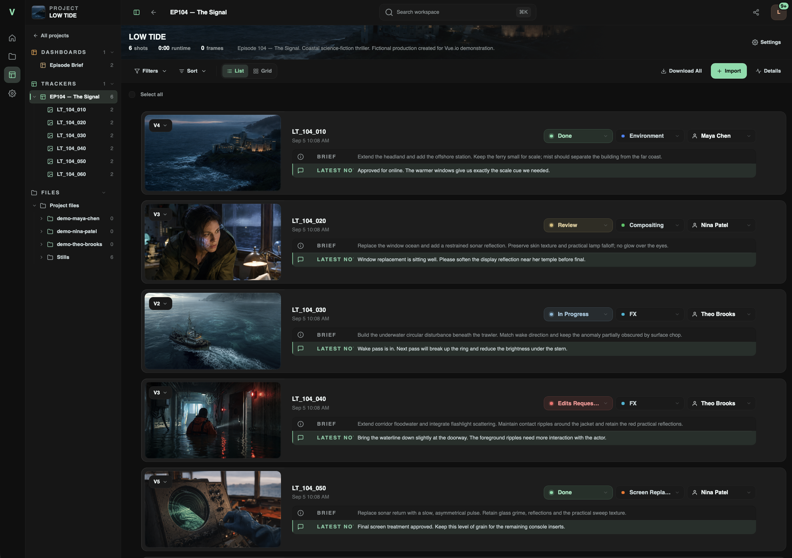
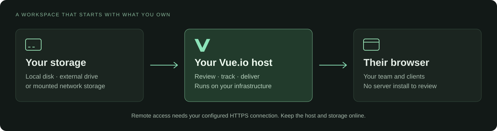

Install, review,
and deliver.
A free, self-hosted alternative to Frame.io.
Review versions, track shots, and deliver from storage you control.
{kind=link}

Actual Vue.io interface. The example project uses synthetic media and fictional team profiles.
Choose a task.
THE ESSENTIAL GUIDESGet started ↗
Installation, first login, and your first review.
02 /Review & versions ↗
Shots, revisions, annotations, and feedback in context.
03 /Workspace & team ↗
Accounts, project access, dashboards, notifications, and agents.
04 /Sharing & delivery ↗
Client review links, downloads, and incoming files.
05 /Storage & operations ↗
Connect your media. Keep the workspace backed up.
06 /Troubleshooting ↗
Find the next step when something does not work.
07 /Common questions ↗
Free self-hosting, platforms, licensing, and more.
Use your own storage.
Register selected local drives or mounted network storage on the host. You manage the server, connection, and backups. Teammates and clients use their browsers.
